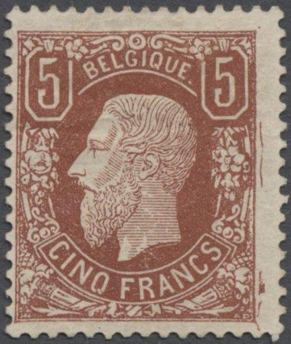
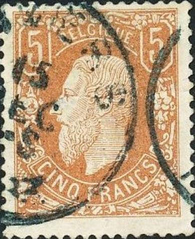
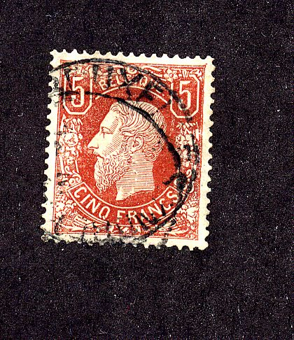
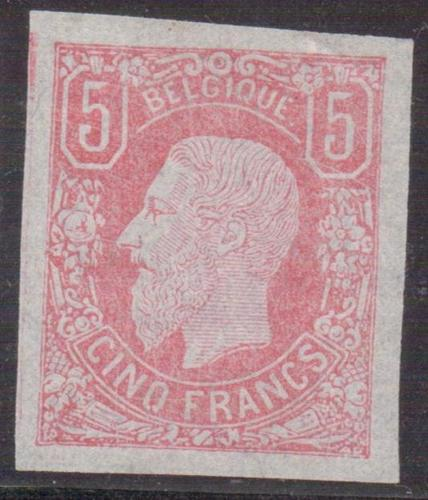
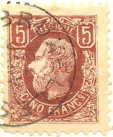
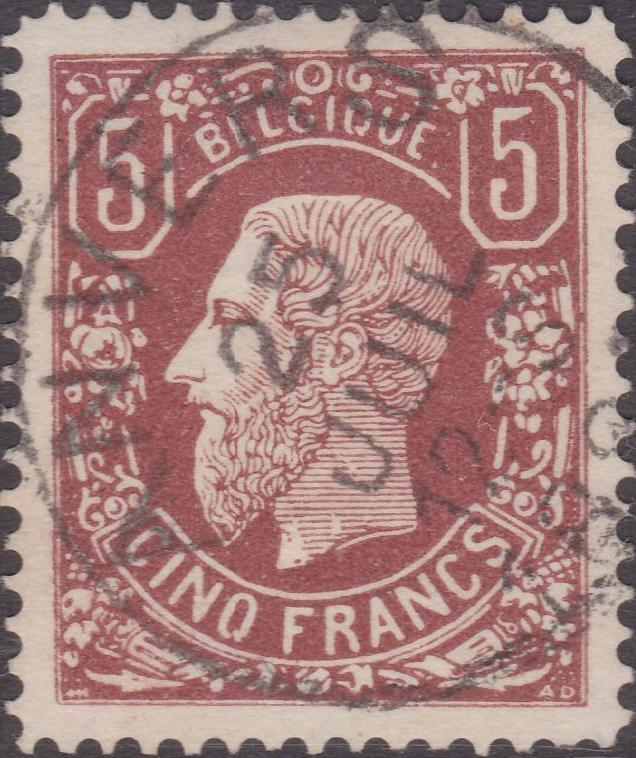
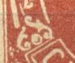
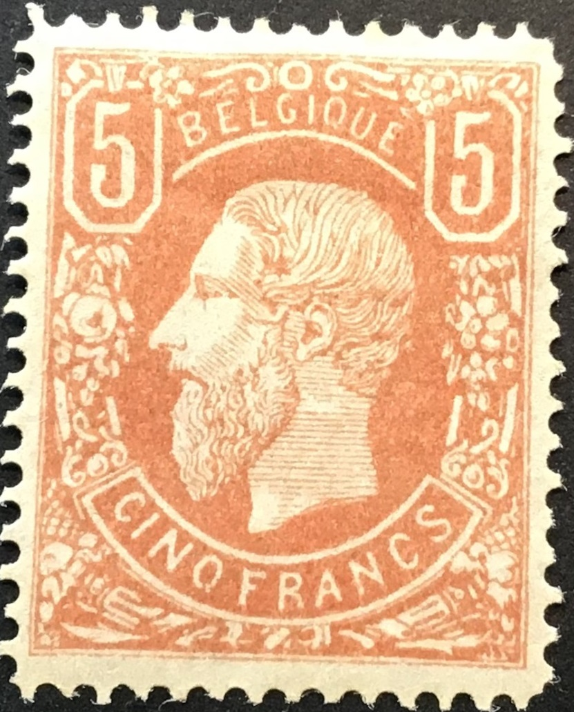

{kind=link}

{kind=link}


Return To Catalogue - Belgium 1869 5 Francs forgeries, part 2 - Belgium 1869-1892
Note: on my website many of the
pictures can not be seen! They are of course present in the
catalogue;
contact me if you want to purchase it.
For stamps of Belgium 1849-1865, King Leopold or Belgium 1866-1869 Lions, click here.

Presumably genuine stamps

I've been told that these are essays in green and red of the 5 F
value. I'm not sure if this is true.
This 5F stamp is the most forged stamp of Belgium. Sites with interesting information about forgeries of this issue (especially the 5 F): http://users.skynet.be/philately/1869/1869-faux.html and http://fauxtimbres.skynetblogs.be/. Also the book 'Les Timbres Belges Faux et Truques' by M.G.Slagmeulder.
The 5 F is very rare (30.000 stamps in red-brown colour were
issued and 18.000 in another shade of yellow-brown only). This is
probably the reason that dangerous forgeries of this stamp are
known to exist (at least 17 different, some from improved
plates). Among the forgers that made forgeries of these stamps
are Fournier, Sperati and Venturini. Fourteen of these forgeries
are described in the book of M. Slagmeulder: 'Les Timbres Belges
Faux & Truqués' (104 pages) or 'Les Timbres Faux de
Belgique' (1955, 157 pages).
These stamps were designed by H.Hendrick and the engraving was
done by A.Doms of the stamp factory (Zegelfabriek) in Mechelen.
The initials 'HH' are found in the left bottom corner and the
initials 'AD' in the right bottom corner of the 5 F stamps.
Distinguishing characteristics of the genuine 5 F:
1) There is a very typical delta-shaped ornament in to the left
of the eye of the King. In many forgeries this ornament has a
different shape.
2) On top of the second "E" of "BELGIQUE"
there should be only one line (not a V-shaped ornament as in some
forgeries).
There exists a badly printed 'Faux de Gand' which has the shading lines on the face going upwards instead of going downwards (1st forgery listed in Slagmeulder. Sorry, no image available yet).
Primitive forgery (Moens), "R"
of "FRANCS" too wide, foot of both '5's too big and
many other differences. This is the only copy of this forgery
I've ever seen and it does not appear to have been listed by
Slagmeulder. I have seen a whole sheet of black impressions which
contains an image of this stamp which were apparently prepared
for "Le Timbre Poste" by Moens in 1876. The image also
appears on page 25 of issue 184 (april 1878). Next to the forgery
above an illustration from an old album (with French and English
text), which shows the same forgery.






Fournier forgeries, with the forged "LOUVAIN 1 SEPT 2-S
1887" cancel, with the Deynze cancel ("DEYNZE 17 NOV
67"), Gand cancel ("GAND 27 AVRIL 1-S 1876"),
"LIEGE 26 AOUT 8-M 1878" and finally "ANVERS 25
JUIL 12-S 1881" .



For example the 5 F is known to be forged by Fournier, or at least sold by him, some sources (Philatelic Forgers, their Lives and Works by V.Tyler) say that actually Oneglia produced the most dangerous Fournier forgery. The cancels that can be found in 'The Fournier Album of Philatelic Forgeries' are: "GAND 27 AVRIL 1-S 1876", "LIEGE 26 AOUT 8-M 1878", "LOUVAIN 1 SEPT 2-S 1881", "DEYNZE 17 NOV 67" (date before the stamps were even issued!) and "LIEGE 15 JUIN 10-M 1881". Fournier offers two varieties of the 5 F in his 1914 pricelist; the 5 F redbrown and the 5 F pale brown for 2 Swiss Francs each as first choice forgeries. The cancel "ANVERS 25 JUIL 12-S 1881" is listed in Slagmeulder, but not shown in the Fournier Album (I have seen it on the 1 c lion issue forgeries though)..
Forged Fournier cancels as shown in a Fournier Album of
Philatelic Forgeries, reduced sizes. Any cancel earlier than 1878
on a 5 F stamp must necessarily be a forgery, since the stamp was
only issued on 6 March 1878.


Fournier forgeries, some of them taken from the Fournier Album of
philatelic forgeries.



Forgery with "CINQ FRANCS" written too small. Possibly
with a "LIEGE 26 AOUT 8-M 1878" cancel (I've seen
others with this cancel; this is the same cancel as shown in the
Fournier Album ). It is listed as the 12th forgery in the
Slagmeulder book. The site http://fauxtimbres.skynetblogs.be/,
also shows this forgery with a "BRUXELLES 22 MAI 2-3
1878" cancel as in the second scan. Also a "GAND 27
AVRIL 1-S 1876" cancel as can be found in the Fournier
Album. I've also seen this forgery with a "ANVERS 25 JUIL
12-S 1881" cancel (as the Fournier forgery). The dot behind
the word "BELGIQUE" is missing?


Some blurly printed imperforate forgeries.
Belgium 1869 5 Francs forgeries, part 2
{kind=link}
{kind=link}
{kind=link}
{kind=link}